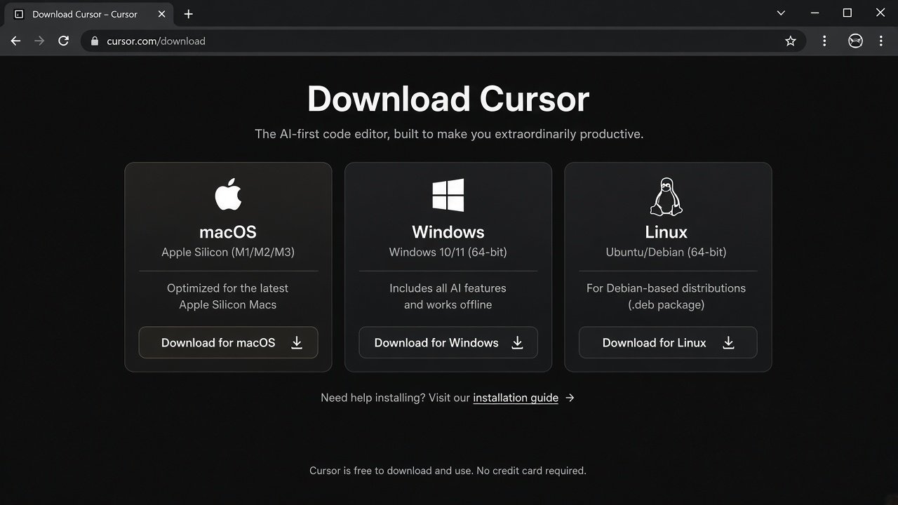
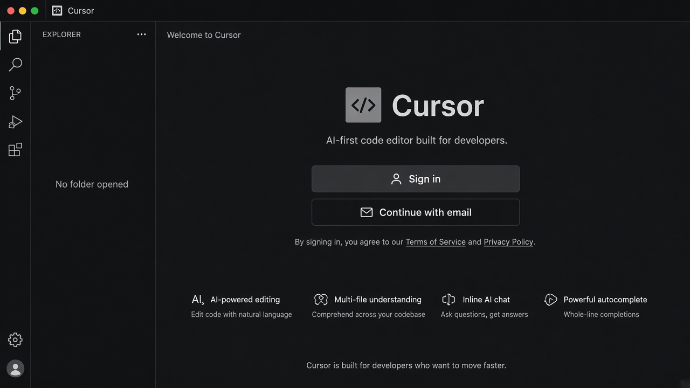
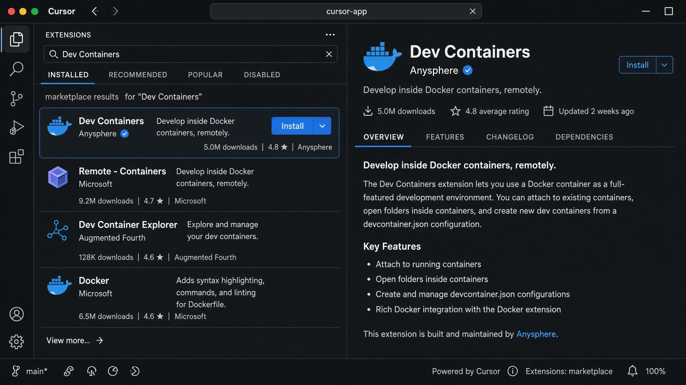
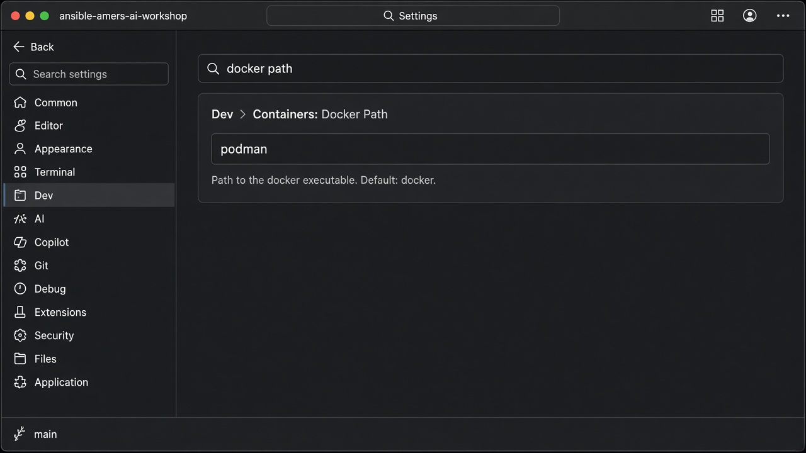
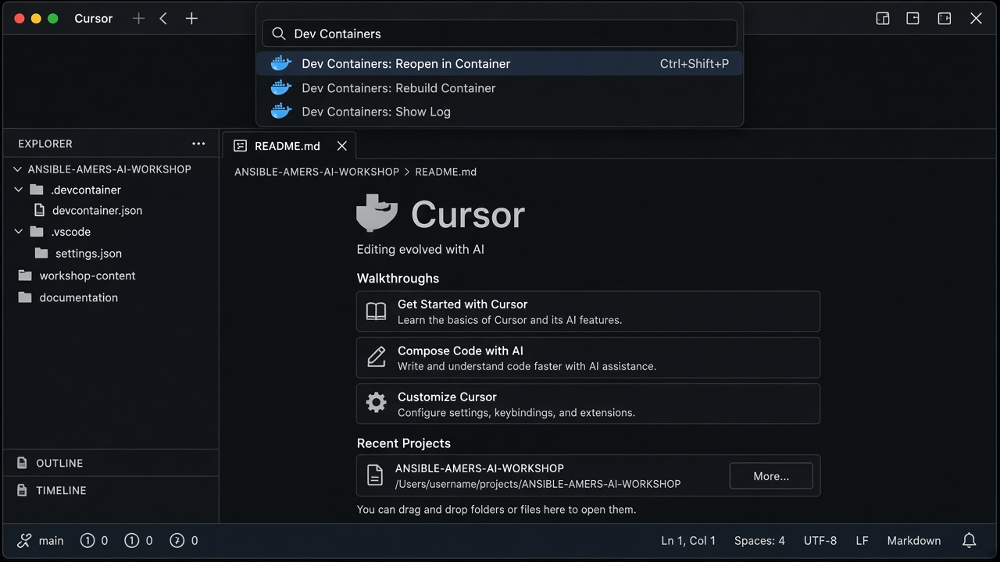

Lab: Cursor Workspace Setup
Request Cursor access, install Cursor, copy the sample Dev Container config to the repository root, and run this workshop inside the community Ansible Development Tools (ADT) container with Podman.
Learning Objectives
After completing this module, you will be able to:
-
Request and obtain Cursor access for Red Hat associate use
-
Install Cursor and the Anysphere Dev Containers extension
-
Copy sample
.devcontainerand.vscodefiles to the repository root and understand what they do -
Reopen the workshop in the ADT Dev Container via Podman
-
Run a sample playbook from the Dev Container terminal
Prerequisites
-
Podman installed and working on your workstation (Podman Desktop is recommended on macOS and Windows)
-
On macOS or Windows: a Podman machine created and running
-
On Linux: the user Podman API socket enabled (
systemctl --user enable --now podman.socket) -
Ability to install desktop software (Cursor) and receive email at your Red Hat address
podman version
podman info
podman run --rm quay.io/podman/hello-
podman infomust succeed. -
On macOS/Windows,
podman machine listshould show the default machine as running.
|
This lab does not walk through installing Podman. If these checks fail, install Podman Desktop (or use your platform package manager) and return here. |
1: Overview
Cursor is an AI-enhanced code editor built on a VS Code–compatible foundation. At Red Hat, Cursor is an approved AI development tool for associate use (subject to local laws and Works Council availability).
This lab gets you from no Cursor install to a verified workspace at the repository root, running inside the community Ansible Development Tools container via Podman.
You will copy these sample files from workshop-content/01-cursor-workspace/samples/ to the repository root:
-
.devcontainer/devcontainer.json— ADT container definition for Podman -
.vscode/settings.json— points Dev Containers atpodman
Those root copies are gitignored so each participant keeps their own local settings.
2: Request Cursor Access
-
Review the internal Cursor overview on The Source: Cursor — AI Tools.
-
Confirm you are in a supported region.
Cursor is available upon request to developers at Red Hat, subject to local laws and regulations. Works Council–supported countries currently approved for use include the Netherlands, Germany, Austria, Spain, and France. Cursor is not available in China or the regions of Crimea, Donetsk, and Luhansk in Ukraine. Accessing Cursor through a VPN solely to bypass regional restrictions violates the contractual terms of use.
-
Submit a request using the Cursor access request form (VPN required): Cursor Access Request.
-
Wait for the confirmation email (typically within about five minutes). Follow the link in the email to complete Cursor account access.
-
If you do not receive email, check junk/spam first, then contact your facilitator or
pge-cloudops@redhat.com.
3: Install Cursor
-
Open Cursor download and select the installer for your OS (macOS, Windows, or Linux).

-
Run the installer and launch Cursor.
-
Sign in when prompted using the account that received Cursor access.

-
Cursor launches without license or authentication errors.
4: Install the Dev Containers Extension
-
Switch from the Agent layout to the Editor (IDE) layout.
If Cursor opened in the Agent-focused view, you need the normal IDE layout (sidebar, Extensions, editor) for the rest of this lab. Press
Cmd+E(macOS) orCtrl+E(Windows/Linux) to toggle to Editor. You should see the activity bar on the left (Explorer, Search, Extensions, and so on). -
In Cursor, open Extensions (
Ctrl+Shift+X/Cmd+Shift+X). -
Search for Dev Containers published by Anysphere.
If the extension does not appear under that name, search the Extensions marketplace for
anysphere.remote-containersand install that result. -
Install Dev Containers (
anysphere.remote-containers).
-
Reload Cursor if prompted.
5: Clone the Workshop and Open the Repository Root
-
Clone the workshop repository:
git clone {workshop_repo_url}.git cd ansible-amers-ai-workshop -
In Cursor: File → Open Folder… and select the repository root:
ansible-amers-ai-workshop
6: Copy Sample Dev Container Config to the Repository Root
Cursor looks for .devcontainer/ and .vscode/ at the folder you opened (the repository root).
Sample files are provided under Lab 1; you copy them into place so you see how the setup works.
-
.devcontainer/devcontainer.json— tells Dev Containers which image to run (ADT), container options for Podman, and which extensions to install inside the container -
.vscode/settings.json— setsdev.containers.dockerPathtopodmanso Cursor uses Podman instead of Docker
-
From the repository root, copy the samples:
cp -R workshop-content/01-cursor-workspace/samples/.devcontainer . cp -R workshop-content/01-cursor-workspace/samples/.vscode . -
Confirm the files exist at the root:
ls -la .devcontainer/devcontainer.json .vscode/settings.json -
Open
.devcontainer/devcontainer.jsonand.vscode/settings.jsonin Cursor and skim them so you know what you copied.
In Settings, search for docker path and confirm it shows podman.

|
Root |
7: Reopen in the ADT Dev Container
-
Open the Command Palette and run Dev Containers: Reopen in Container.

-
Wait for Podman to pull/start
ghcr.io/ansible/community-ansible-dev-tools:latestand for the status bar to show a Dev Container connection. -
Open Terminal → New Terminal. This shell is inside the ADT container.
ansible-playbook --version
ansible-lint --version8: Run the Sample Playbook
-
In the Dev Container terminal:
cd workshop-content/01-cursor-workspace ansible-playbook playbooks/hello.yml
The playbook completes successfully and prints a hello message with the Ansible version from the ADT container.
9: Verify Your Setup
| Check | Success criteria |
|---|---|
Podman ready |
|
Cursor access |
Signed in without license errors |
Config copied to root |
|
Connected to ADT container |
Status bar shows Dev Container; |
Sample playbook |
|
10: Troubleshooting
| Symptom | What to try |
|---|---|
Dev Containers still calls |
Confirm you copied |
No Dev Container prompt / config not found |
Confirm |
|
|
Permission / socket errors on Linux |
|
GUI-launched Cursor cannot find |
Launch Cursor from a shell where |
Use Dev Containers: Show Log from the Command Palette while reproducing failures.
11: Next Steps
Proceed to Module 2: Shell-to-Ansible Migration. Keep using this same Dev Container session at the repository root.